脊髓是连接脑与周围神经系统的主要通路。它既是传导通路（白质传导束），又是低级反射中枢（灰质前角运动神经元、后角感觉中继、侧角自主神经中枢）。理解脊髓的解剖结构，是神经病学定位诊断的第一步——几乎所有脊髓疾病都可以通过「损害了什么结构→出现什么症状」的对应关系来定位。
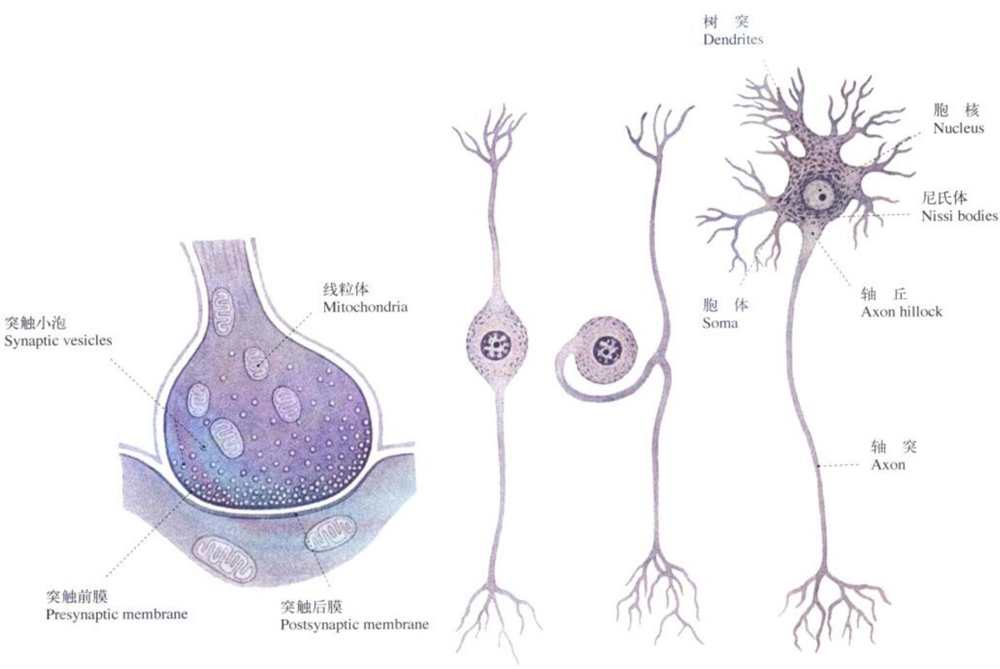
脊髓全长约 42-45cm，呈前后稍扁的圆柱形。表面有六条纵行沟裂：前正中裂（最深，含脊髓前动脉）、后正中沟、两侧的前外侧沟（前根穿出处）、两侧的后外侧沟（后根穿入处）。脊髓有两个膨大：
成人：脊髓下端止于第1腰椎（L1）下缘 → 腰椎穿刺选L3-L4或L4-L5间隙，避免损伤脊髓。
新生儿：可达第3腰椎（L3）水平 → 新生儿腰穿位置需下移。
脊髓末端变细为脊髓圆锥，再向下延伸为结缔组织细丝终丝，止于尾骨。L1以下的椎管内只有腰、骶、尾神经根，称为马尾。
想象一根电梯井（脊柱）和里面的电梯（脊髓），但电梯只升到10楼就不动了——上面的楼层靠「电缆」（神经根）继续传信号。同理，胚胎期脊柱长得比脊髓快，脊髓末端的神经根只能「拖着」向下走一段才能从对应的椎间孔出去，这些拖下来的神经根就是马尾。C1~C4的神经根基本横向出孔（不拖），越往下的节段拖得越长（C5~T4拖1个椎体，T5~T8拖2个，T9~T12拖3个）。
由于胚胎发育中脊柱生长速度快于脊髓，成人脊髓节段与椎骨并不一一对应。这一对应关系是脊柱MRI定位和腰穿定位的基础：
| 脊髓节段 | 对应椎骨 | 记忆口诀 |
|---|---|---|
| C1-C4 | 与同序数椎骨对应 | 「上颈段不偏移」 |
| C5-T4 | 同序数椎骨 -1 | 「减一」 |
| T5-T8 | 同序数椎骨 -2 | 「减二」 |
| T9-T12 | 同序数椎骨 -3 | 「减三」 |
| L1-L5 | T10-T12 椎体水平 | 「腰段挤一起」 |
| S1-S5、Co | T12-L1 椎体水平 | 「骶尾在最底」 |
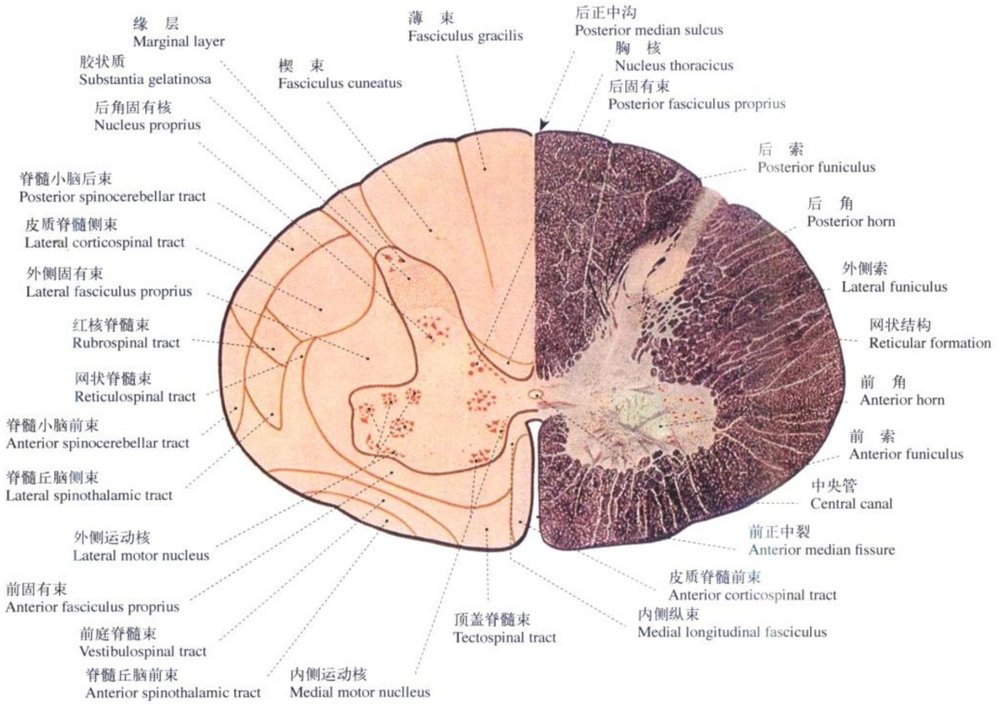
脊髓横断面的「H形灰质+外周白质」结构是理解所有脊髓综合征的钥匙。灰质分前角（运动）、后角（感觉）、侧角（自主神经）；白质分前索、侧索、后索，内含各种传导束。
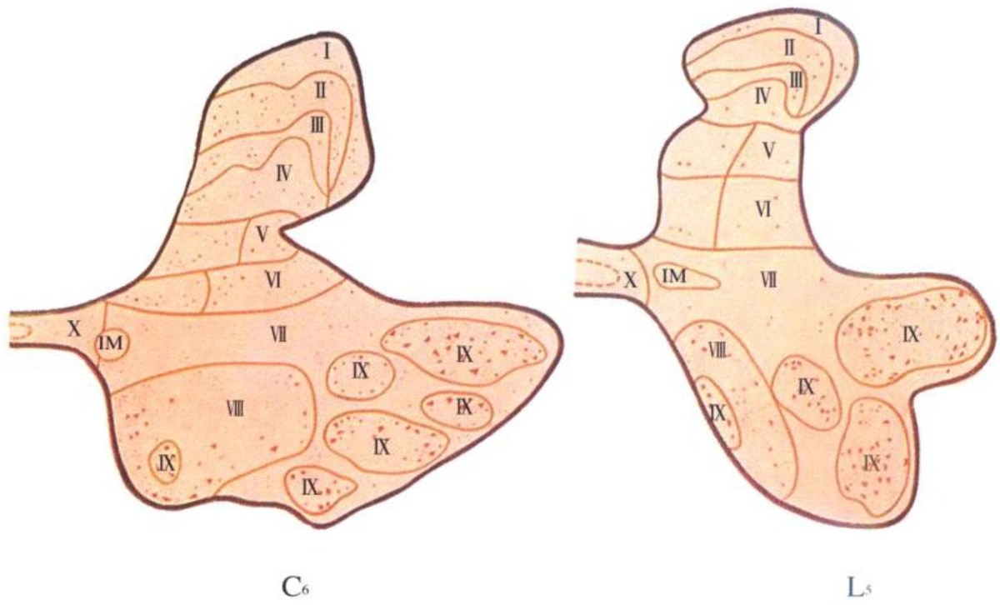
| 结构 | 功能 | 损害后表现 | 典型疾病 |
|---|---|---|---|
| 前角 | 下运动神经元（α/γ细胞） | 下运动神经元瘫+肌萎缩+束颤 | 脊髓灰质炎、ALS |
| 后角 | 感觉中继（痛温觉二级神经元） | 节段性分离性感觉障碍 | 脊髓空洞症 |
| 侧角 (C8-L2) | 交感神经中枢 | Horner综合征（T1侧角） | Pancoast瘤压迫 |
| 侧角 (S2-S4) | 副交感神经中枢 | 神经源性膀胱 | 骶髓损伤 |
| 前索 | 皮质脊髓前束（未交叉锥体束） | 对侧躯干肌轻瘫 | 脊髓前动脉综合征 |
| 侧索 | 皮质脊髓侧束+脊髓丘脑束 | 对侧偏瘫+对侧痛温觉障碍 | 脊髓半切综合征 |
| 后索 | 薄束+楔束（深感觉传导） | 同侧深感觉障碍+感觉性共济失调 | 亚急性联合变性、脊髓痨 |
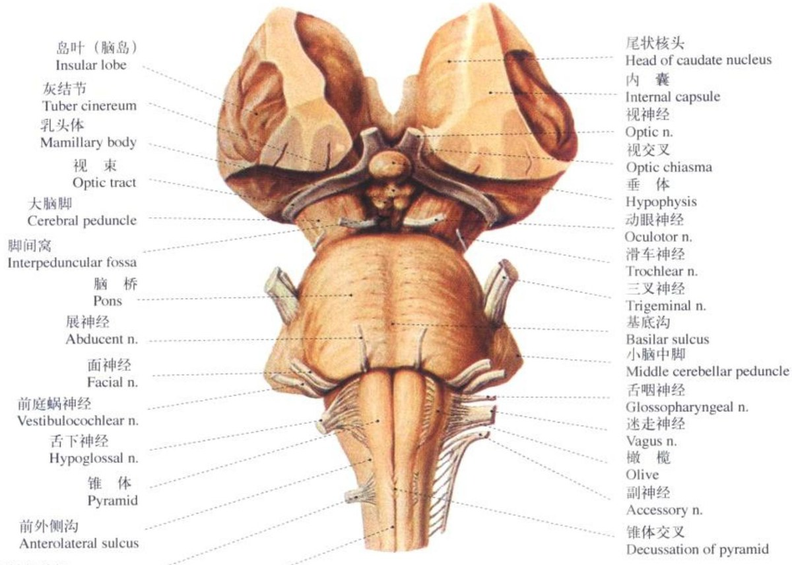
以下是神经病学考试和临床中最核心的五个脊髓综合征。每个综合征都能从横断面解剖中找到依据——记住哪个传导束在哪条索里，就能推出症状。
损害平面以下全部感觉和运动功能丧失，伴有大小便功能障碍。急性期出现脊髓休克（弛缓性瘫、反射消失），数周后转为痉挛性瘫。
病因：急性脊髓炎、脊髓压迫症（肿瘤、椎间盘）、外伤。
定位线索：感觉平面是关键——乳头平面=T4，脐平面=T10，腹股沟=T12。
解剖依据：皮质脊髓束和后索在脊髓内不交叉（同侧传导），脊髓丘脑束在脊髓内已交叉（对侧传导）。
| 患侧（同侧） | 健侧（对侧） | |
|---|---|---|
| 运动 | 上运动神经元瘫（皮质脊髓侧束） | 正常 |
| 深感觉 | 障碍（后索） | 正常 |
| 痛温觉 | 病变平面过敏带 | 障碍（脊髓丘脑束已交叉） |
口诀：「半切同动深感，对痛温」
病因：外伤、髓外肿瘤早期。
表现：前角运动神经元受损→下运动神经元瘫+肌萎缩+肌束颤动，感觉正常。
病因：脊髓灰质炎（小儿麻痹症）、肌萎缩侧索硬化症（ALS）。
表现：同侧深感觉障碍+感觉性共济失调（闭目难立征阳性），运动正常。
病因：亚急性联合变性（VitB12缺乏）、脊髓痨（梅毒）、多发性硬化。
解剖依据：白质前连合（脊髓丘脑束交叉纤维通过处）受损→双侧对称性痛温觉丧失，触觉和深感觉保留（后索完好）。
表现：「分离性感觉障碍」——痛温觉丧失但触觉保存。
病因：脊髓空洞症、髓内肿瘤早期。
特征：马鞍回避（部感觉保留，因骶部纤维在后索最外侧）。
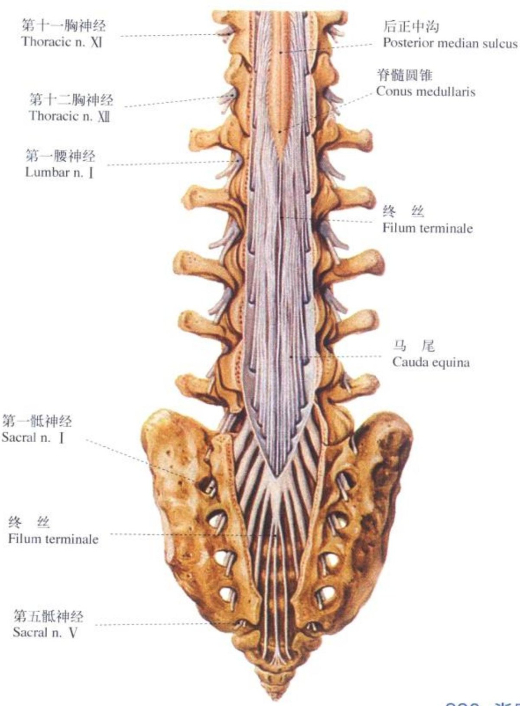
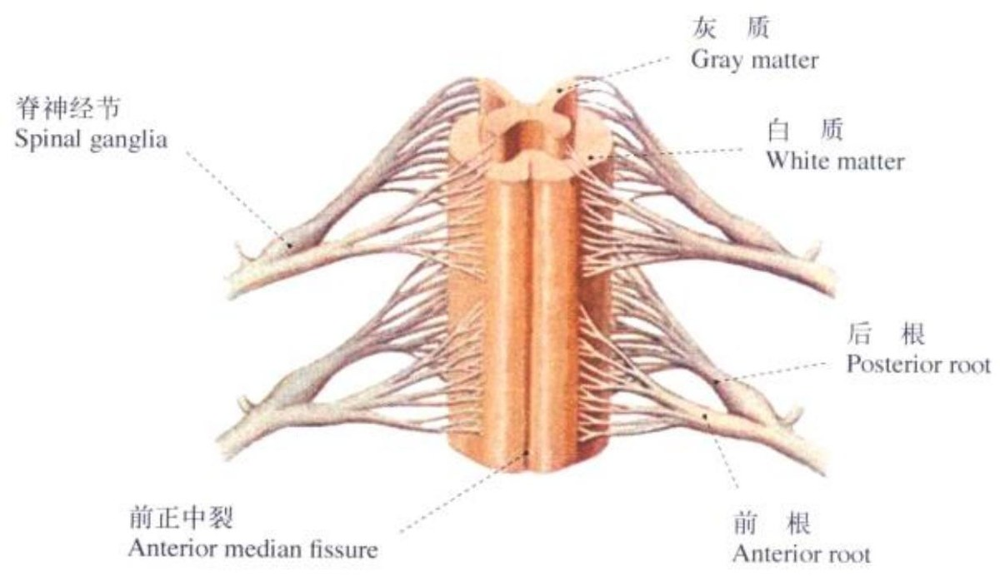
| 特征 | 髓内病变 | 髓外硬膜内 | 髓外硬膜外 |
|---|---|---|---|
| 根痛 | 少见 | 早期且显著 | 剧烈 |
| 感觉障碍发展 | 下行性（从病变节段向下） | 上行性（从足开始向上） | 不定 |
| 感觉障碍类型 | 分离性（痛温觉先丧失） | 传导束性（全面性） | 传导束性 |
| 括约肌障碍 | 早且严重 | 较晚 | 不定 |
| 椎管梗阻 | 晚、不完全 | 早、完全 | 早 |
| CSF蛋白 | 增加不明显 | 明显增高 | 增高 |
| 常见病因 | 室管膜瘤、星形细胞瘤、空洞症 | 神经鞘瘤、脊膜瘤 | 转移瘤、椎间盘突出 |
脑干是脊髓与大脑之间的必经之路，也是脑神经核团的所在地。它有三个关键特征：
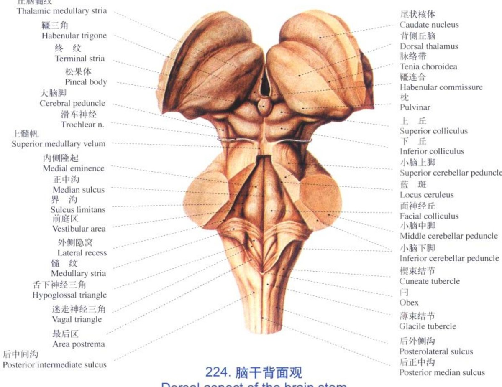
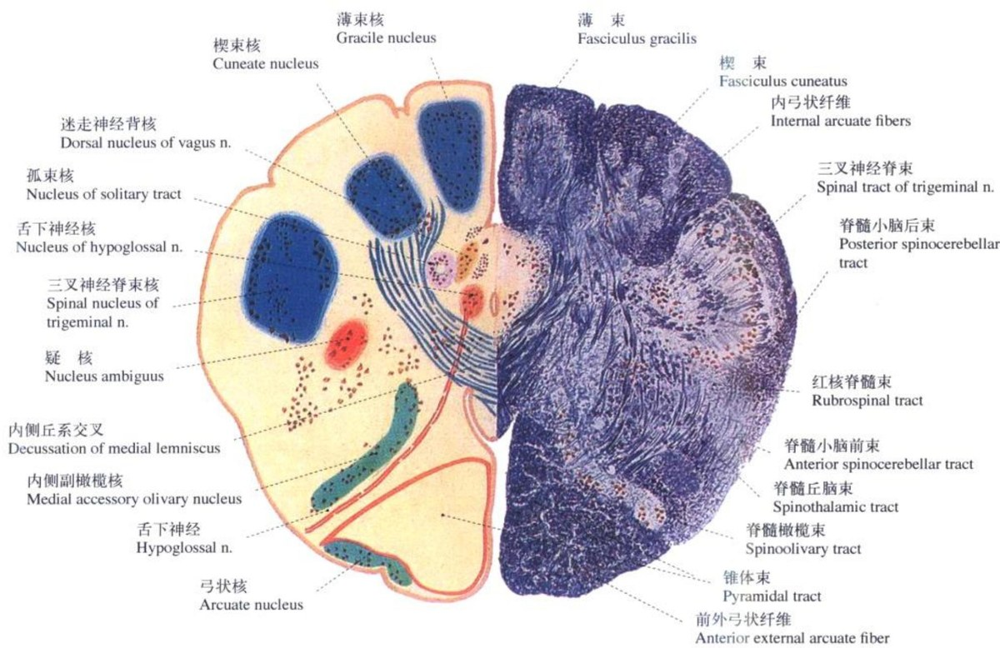
脑干横断面中，从正中线向外4mm内的结构（4M）由旁正中动脉（ASA/BA穿支）供血，4mm以外的结构（4S）由环周动脉（PICA/AICA/SCA）供血：
| 中线4mm内（内侧综合征） | 4mm外（外侧综合征） |
|---|---|
| Motor tract（皮质脊髓束）→ 对侧偏瘫 | Spinothalamic tract → 对侧痛温觉障碍 |
| Medial lemniscus → 对侧深感觉障碍 | Sensory nucleus of V → 同侧面部感觉障碍 |
| ML（内侧纵束）→ 眼肌运动异常 | Sympathetic tract → 同侧Horner综合征 |
| Motor CN核（Ⅲ/Ⅳ/Ⅵ/Ⅻ）→ 同侧脑神经瘫 | Spino-cerebellar tract → 同侧共济失调 |
记忆：内侧=运动+深感觉（4M），外侧=感觉+小脑（4S）
把脑干想象成一个地铁换乘站，有两条主要轨道：内侧月台（中线4mm内）走「运动快线」（皮质脊髓束）和「深感觉线」（内侧丘系）——这两条线的乘客（纤维）都在这里上下车，所以中线旁病变=对侧运动+深感觉障碍+同侧脑神经核受损（因为脑神经核也在中线旁）。外侧月台（4mm外）走「浅感觉慢线」（脊髓丘脑束）和「小脑观光环线」——这些线路被堵=对侧浅感觉障碍+同侧共济失调。
记住一个临床规律：旁正中动脉（中线旁供血）闭塞=内侧综合征（4M），环周动脉（外侧供血）闭塞=外侧综合征（4S）。这就是为什么血管走行决定了临床表现。
延髓是脑干最下端，与脊髓相连。它有4个标志性横切面，每个断面都有特定的临床综合征对应。
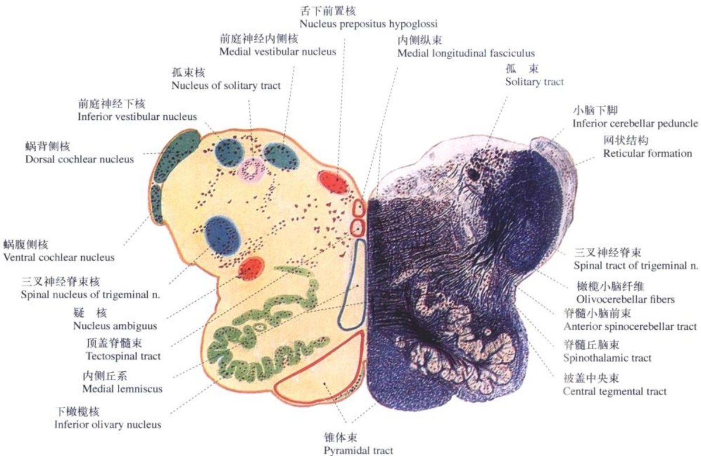
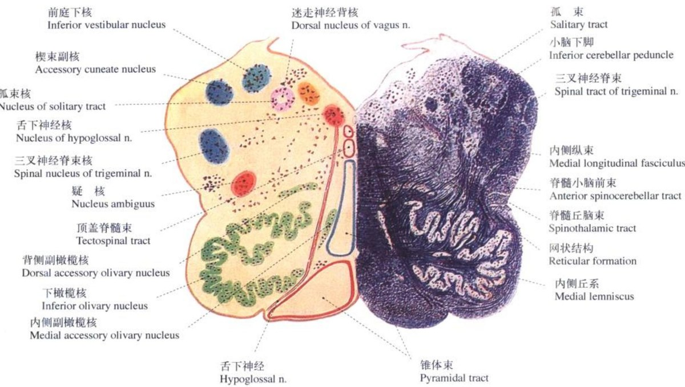
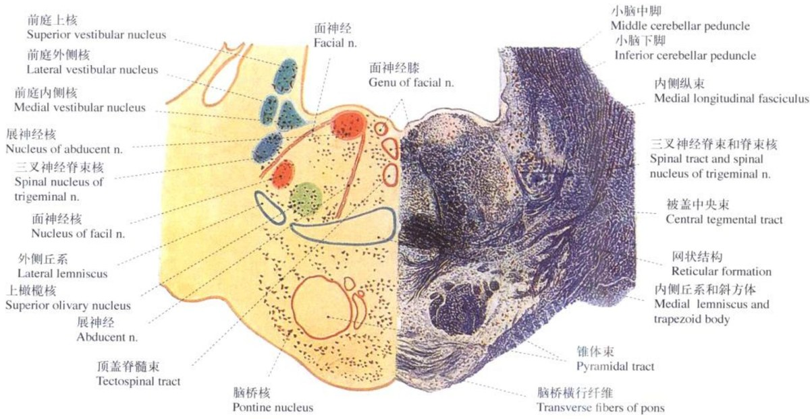
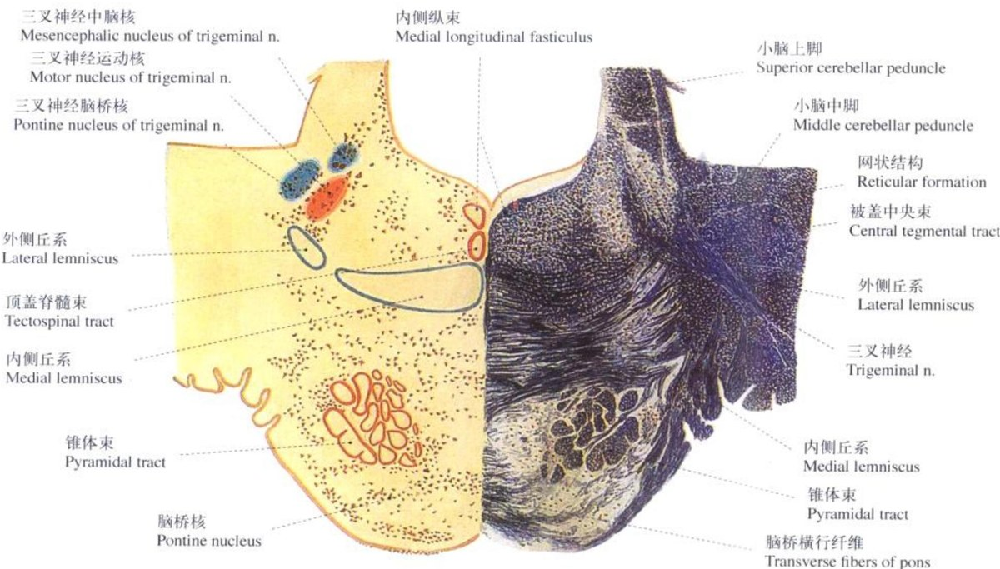
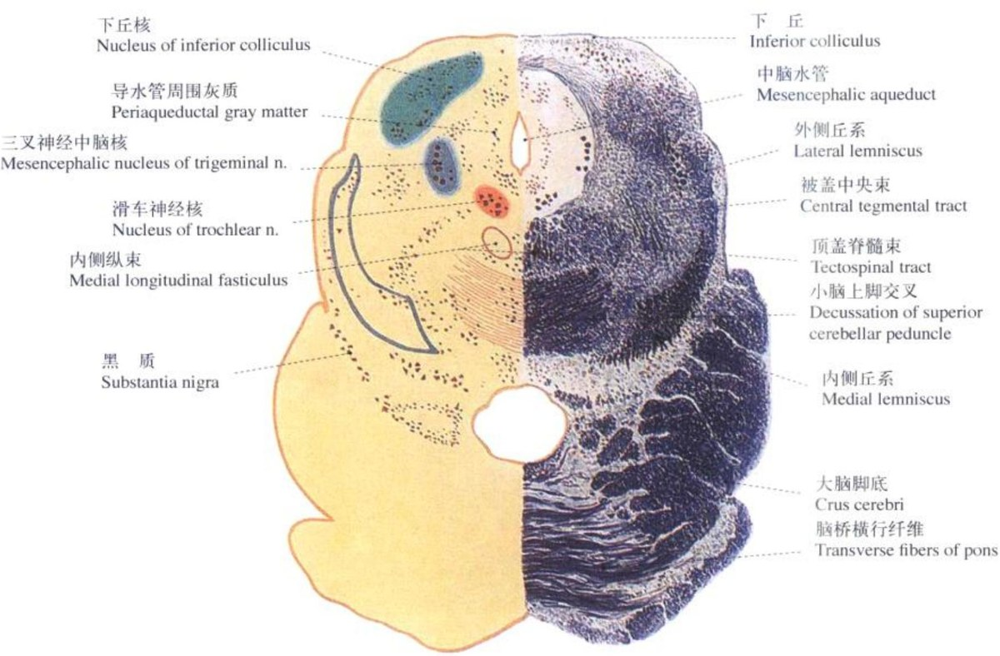
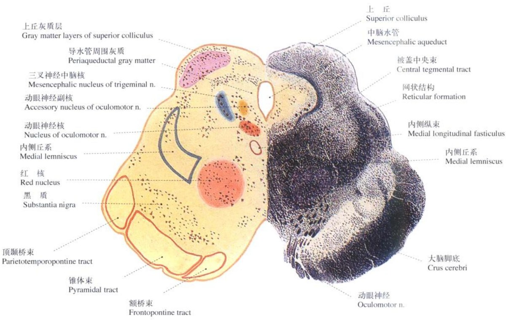
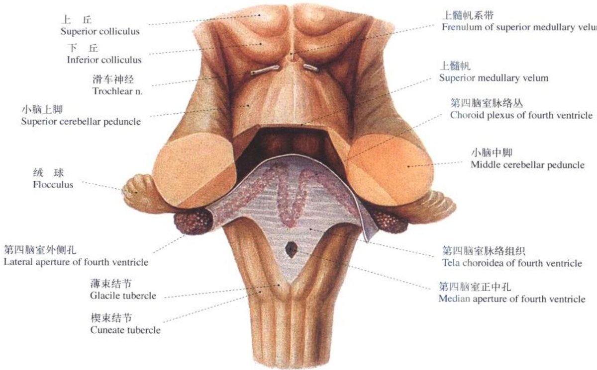
| 综合征 | 病变部位 | 责任血管 | 同侧（脑神经） | 对侧（长传导束） |
|---|---|---|---|---|
| Weber | 中脑腹侧（大脑脚） | PCA穿支 | 动眼神经瘫（上睑下垂+瞳孔散大+眼外斜） | 皮质脊髓束→偏瘫 |
| Millard-Gubler | 脑桥腹外侧 | BA/AICA穿支 | 展神经瘫+面神经瘫 | 皮质脊髓束→偏瘫 |
| Wallenberg （延髓背外侧）⭐ |
延髓背外侧 | PICA | Ⅴ/Ⅸ/Ⅹ核→同侧面部痛温觉丧失、吞咽困难、声音嘶哑、Horner综合征、同侧共济失调 | 脊髓丘脑束→对侧躯体痛温觉丧失 |
| Dejerine （延髓内侧） |
延髓内侧 | ASA | 舌下神经瘫→伸舌偏向患侧 | 内侧丘系+锥体束→对侧深感觉障碍+偏瘫 |
| Raymond-Cestan （脑桥背外侧） |
脑桥背外侧 | AICA | 面神经+前庭蜗神经→面瘫+耳聋眩晕 | 脊髓丘脑束+小脑→对侧痛温觉障碍+共济失调 |
延髓两个经典综合征——记住血管就记住一切：
口诀：「PICA外侧Wallenberg——面痛吞咽Horner晕；ASA内侧Dejerine——舌瘫偏瘫深感觉」
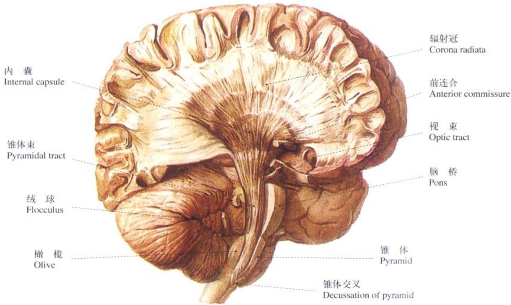
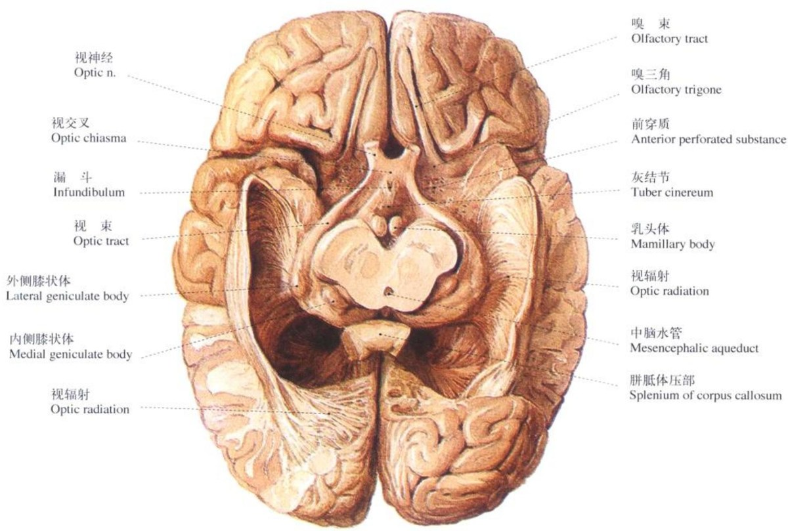
小脑位于颅后窝，通过三对小脑脚与脑干相连。它不接受意识支配，但负责协调随意运动、维持平衡和调节肌张力。小脑病变导致同侧共济失调（因为小脑传出纤维双重交叉）。
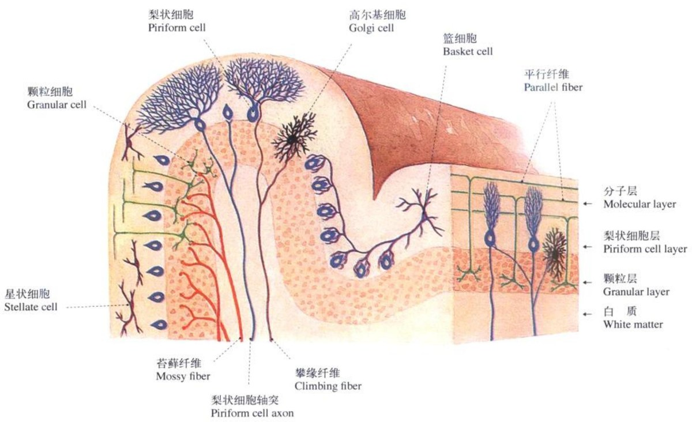
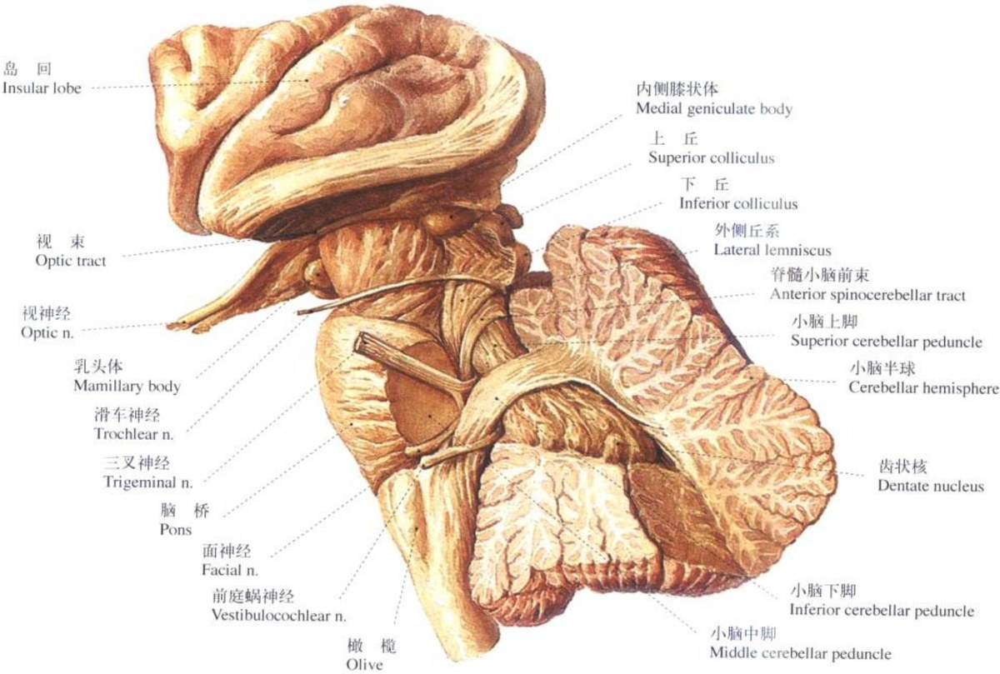
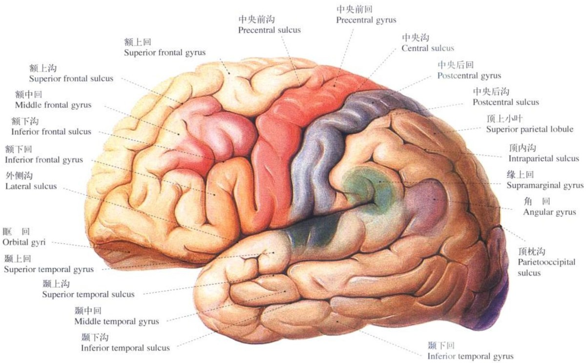
| 脚名 | 别名 | 主要纤维方向 | 连接结构 |
|---|---|---|---|
| 小脑上脚 | 结合臂 | 以传出为主 | 齿状核→红核→丘脑→皮层 |
| 小脑中脚 | 脑桥臂 | 全部传入 | 脑桥核→小脑皮质（皮质-脑桥-小脑通路） |
| 小脑下脚 | 绳状体 | 以传入为主 | 脊髓小脑后束+橄榄小脑束→小脑 |
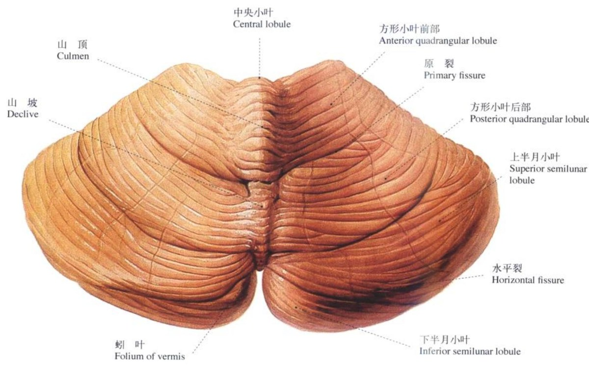
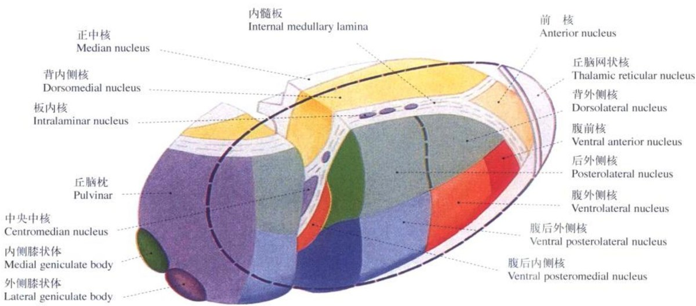
| 特征 | 小脑病变 | 基底节病变 |
|---|---|---|
| 运动障碍类型 | 共济失调（运动不协调） | 不自主运动（震颤/舞蹈症/手足徐动） |
| 病变侧 | 同侧 | 对侧 |
| 肌张力 | 降低 | 增高（帕金森）或不定 |
| 腱反射 | 钟摆样 | 正常 |
| 典型体征 | 意向性震颤、辨距不良、轮替障碍 | 静止性震颤、齿轮样强直、运动减少 |
1909年德国神经解剖学家Brodmann根据细胞构筑将大脑皮层分为52个区，至今仍是功能定位的标准语言。对于神经病学考试，需要掌握以下核心分区：
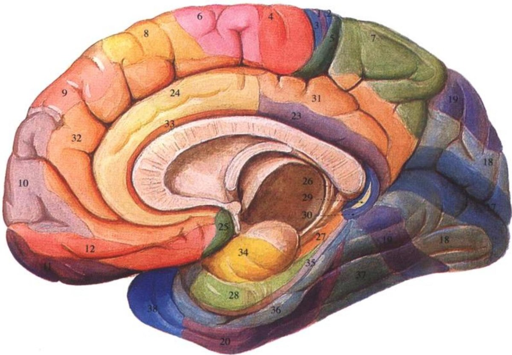
| Brodmann区 | 解剖位置 | 功能 | 病变表现 |
|---|---|---|---|
| BA4,6 | 中央前回+旁中央小叶前部 | 初级运动皮层 | 对侧单瘫（倒人形分布：下肢在内侧，上肢在外侧，面部最外侧） |
| BA8 | 额中回后部 | 额叶眼动区 | 双眼向对侧凝视障碍 |
| BA44,45 | 额下回后部（优势半球） | Broca区（运动性语言） | Broca失语（能理解但不能流利表达） |
| BA6（前部） | 额叶前部 | 精神、人格、主动性 | 人格改变、情感淡漠、主动性下降 |
| BA3,1,2 | 中央后回+顶上回 | 初级躯体感觉皮层 | 对侧感觉障碍（倒人形） |
| BA5,7 | 顶上回、缘上回 | 体象、运用、形体觉 | 失用症、体象障碍 |
| BA39 | 角回（优势半球） | 阅读、计算 | Gerstmann综合征（手指失认+左右失定向+失写+失算） |
| BA40 | 缘上回（优势半球） | 运用中枢 | 失用症 |
| BA22 | 颞上回后部（优势半球） | Wernicke区（感觉性语言） | Wernicke失语（能流利说话但不能理解） |
| BA38 | 颞极 | 记忆、情感 | 近事记忆障碍 |
| BA17 | 距状裂上下皮质（枕叶内侧面） | 初级视皮层 | 对侧同向偏盲 |
| BA41,42 | 颞横回 | 初级听皮层 | 双侧听觉（单侧病变不聋） |
内囊是端脑最关键的白质结构——所有出入大脑半球的投射纤维都集中通过这个狭窄区域。正因为「道路窄、车流量大」，内囊成为脑血管病（尤其是高血压脑出血）的高发部位。
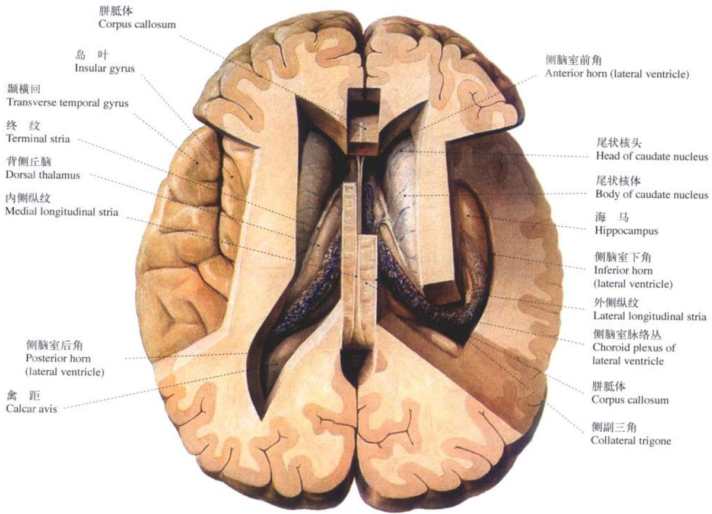
| 内囊分部 | 通过的纤维 | 血供 | 病变表现 |
|---|---|---|---|
| 前肢 | 额桥束、丘脑前辐射 | Heubner动脉（ACA）+ 纹状体内侧动脉 | 症状较轻，可有轻度对侧偏瘫 |
| 膝部 | 皮质核束（支配脑神经运动核） | 纹状体内侧动脉 | 对侧中枢性面瘫+舌下神经瘫（面舌瘫） |
| 后肢（前2/3） | 皮质脊髓束（支配肢体运动） | 豆纹动脉（MCA）+ 前脉络膜动脉 | 对侧偏瘫 |
| 后肢（后1/3） | 丘脑皮质束+视辐射+听辐射 | 前脉络膜动脉（AChA） | 对侧偏身感觉障碍+对侧同向偏盲 |
内囊后肢完全损害时，皮质脊髓束+丘脑皮质束+视辐射全部受损→
病因：高血压脑出血（最常见）、脑梗死。
鉴别：内囊病变无皮质征（无失语、无忽视、无癫痫），可与皮层卒中鉴别。
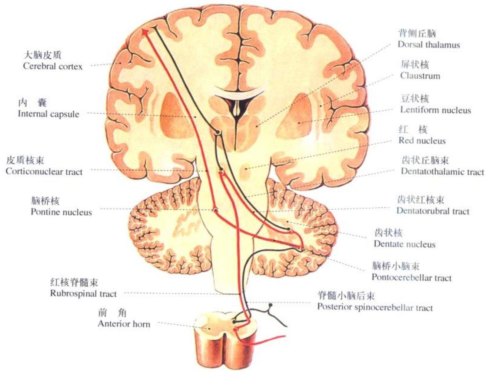
失语症是优势半球（95%右利手为左半球）语言中枢病变所致。理解失语症的关键是区分表达障碍（Broca区）和理解障碍（Wernicke区），以及复述功能是否保留。
| 类型 | 病变部位 | 口语表达 | 理解 | 复述 | 命名 | 常见病因 |
|---|---|---|---|---|---|---|
| Broca失语 | 额下回后部（BA44/45） | ❌ 非流利、电报式 | ✅ 相对保留 | ❌ 差 | ❌ 差 | MCA上分支梗死 |
| Wernicke失语 | 颞上回后部（BA22） | ✅ 流利但空洞 | ❌ 严重障碍 | ❌ 差 | ❌ 差 | MCA下分支梗死 |
| 传导性失语 | 弓状束（连接Broca和Wernicke区） | ✅ 流利但有错词 | ✅ 较好 | ❌ 明显差 | ❌ | 外侧裂区梗死 |
| 命名性失语 | 颞中回后部 | ✅ 流利 | ✅ 好 | ✅ 好 | ❌ 找词困难 | 最常见长期缺陷 |
| 完全性失语 | MCA大范围（额颞顶） | ❌ 刻板言语 | ❌ 严重障碍 | ❌ | MCA主干梗死，预后差 | |
| 经皮质运动性 | ACA-MCA分水岭区 | ❌ 非流利（类似Broca） | ✅ 好 | ✅ 保留 | ❌ | 分水岭梗死 |
| 经皮质感觉性 | MCA-PCA分水岭区 | ✅ 流利（类似Wernicke） | ❌ 差 | ✅ 保留 | ❌ | 分水岭梗死 |
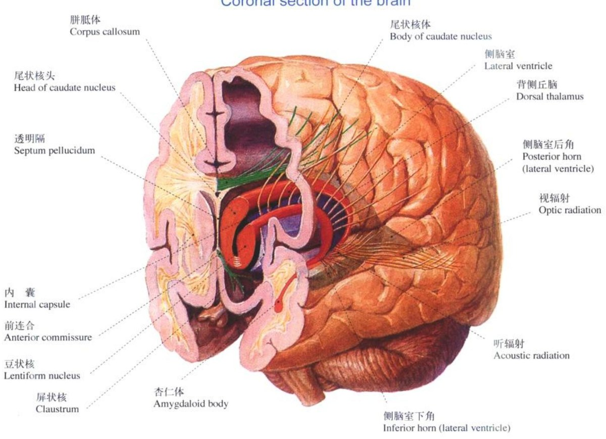
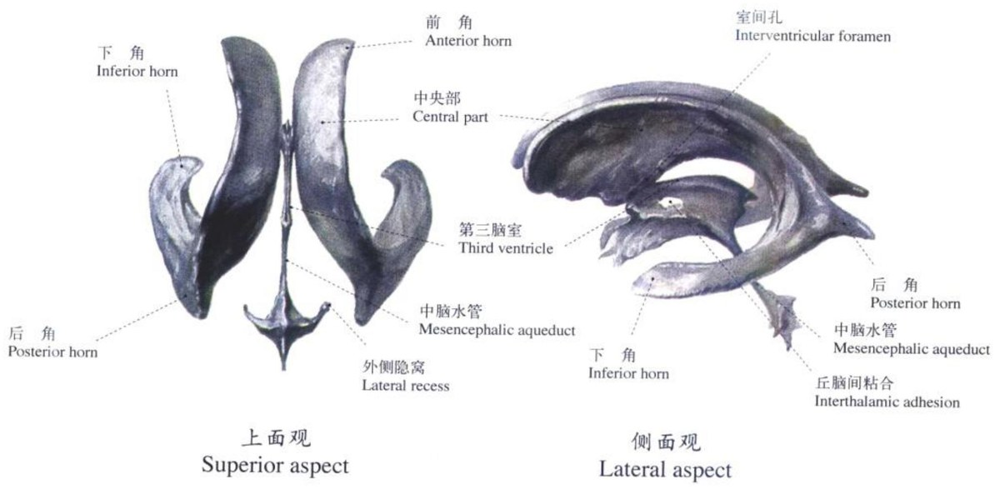
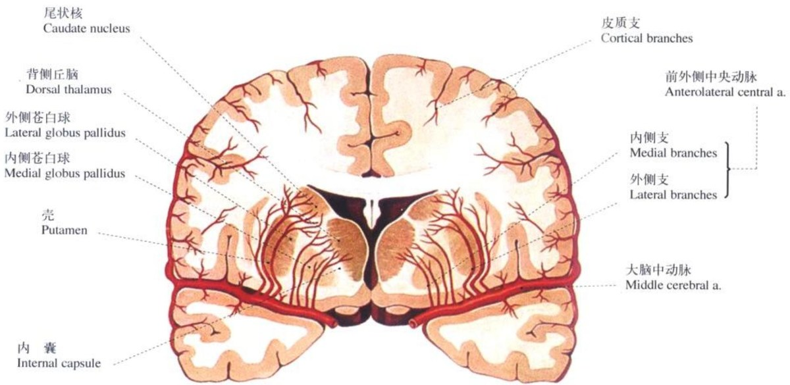
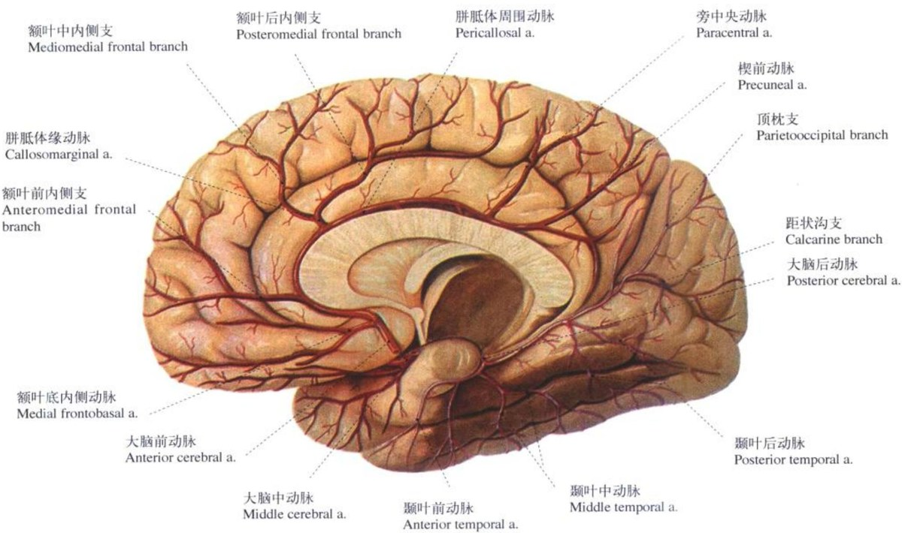
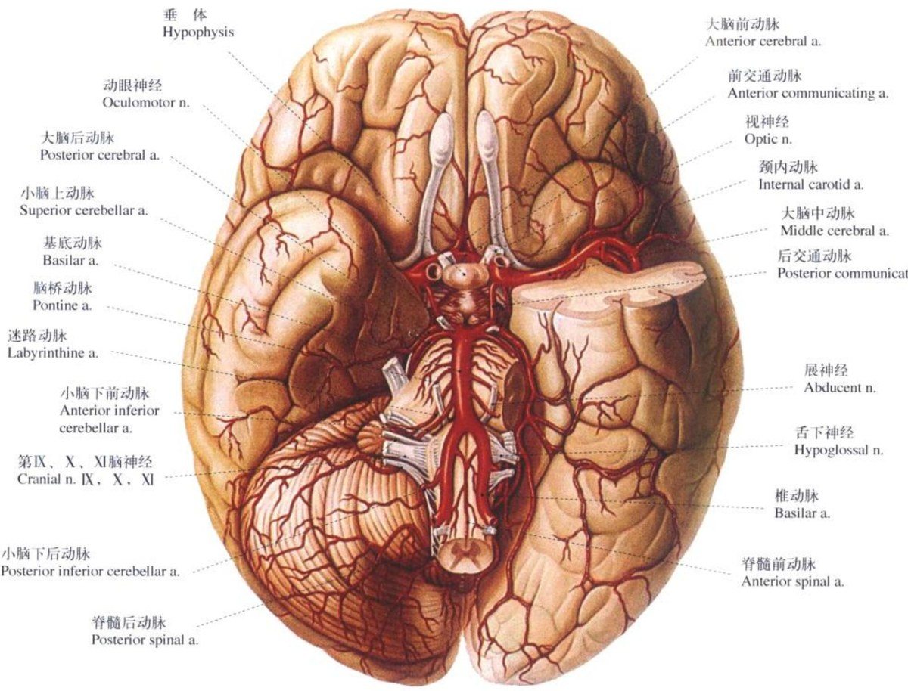
| 动脉 | 供血区 | 闭塞后综合征 | 定位线索 |
|---|---|---|---|
| MCA （最常见卒中血管，60-70%） |
大脑外侧面大部 （额/顶/颞叶） |
主干闭塞：对侧偏瘫+偏身感觉障碍+偏盲+失语（优势半球）+凝视麻痹 皮层支：对侧面舌上肢瘫>下肢+失语/体象障碍 深穿支：对侧均等性偏瘫（腔隙性） |
Face/Arm > Leg 优势半球→失语 非优势半球→忽视 |
| ACA | 额叶内侧面 旁中央小叶 |
主干闭塞：对侧下肢瘫>上肢瘫+轻度感觉障碍+尿失禁+强握反射 双侧闭塞：双下肢瘫+精神症状（淡漠、欣快）+尿潴留 |
Leg > Arm 尿失禁 人格改变 |
| PCA | 枕叶+颞叶内侧+丘脑 | 皮层支：对侧同向偏盲（黄斑回避）+视觉失认+失读（优势半球） 深穿支：丘脑综合征（对侧偏身感觉障碍+自发疼痛+轻偏瘫） |
偏盲+黄斑回避 失读不伴失写（左PCA） 丘脑痛（右PCA） |
判断卒中是皮层还是皮层下（腔隙性），关键看有无「皮层征」：
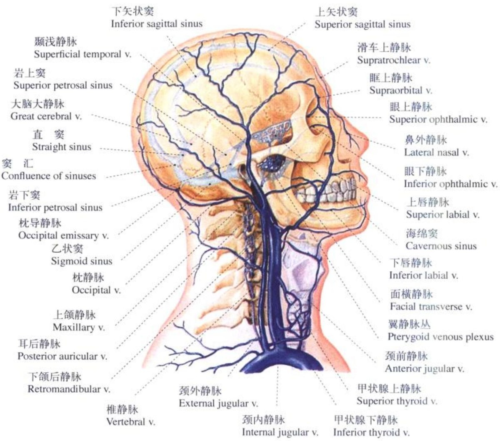
Willis环是前循环与后循环之间的侧支通路，但仅约50%的人拥有完整Willis环。重要变异：
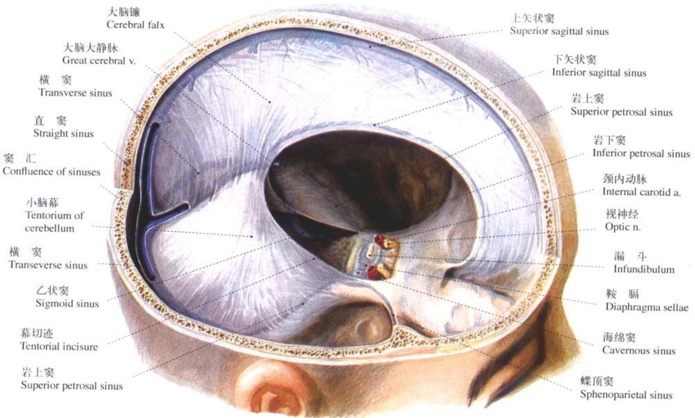
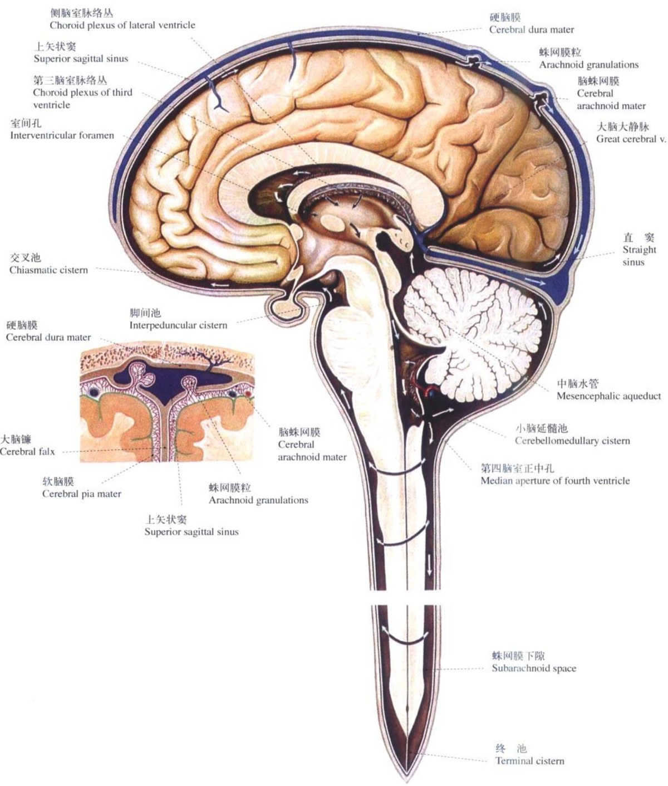
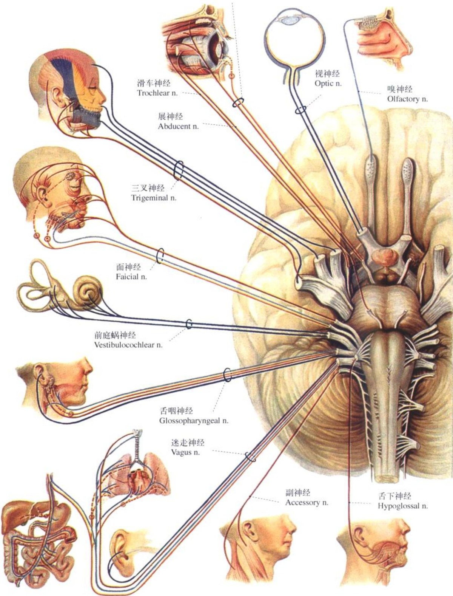
皮肤 → 浅筋膜 → 棘上韧带 → 棘间韧带 → 黄韧带 → 硬膜外隙 → 硬脊膜 → 硬膜下隙 → 蛛网膜 → 蛛网膜下隙
穿过硬脊膜和蛛网膜后，穿刺针进入蛛网膜下隙，即可采集脑脊液。成人腰穿选L3-L4或L4-L5间隙（嵴连线平L4棘突）。
CSF总量约150ml，每日产生约500ml（每天更新3-4次）。压力：侧卧位70-180mmH₂O。
| 类型 | 阻塞部位 | 脑室改变 | 常见病因 |
|---|---|---|---|
| 非交通性（梗阻性） | 脑室系统内（室间孔/中脑水管/第四脑室孔） | 阻塞部位以上脑室扩大 | 肿瘤压迫、导水管狭窄、出血后粘连 |
| 交通性 | 蛛网膜颗粒吸收障碍 | 全部脑室扩大 | SAH后、脑膜炎后、正常颅压脑积水 |
12对脑神经中，Ⅰ和Ⅱ属于端脑和间脑（非真正的周围神经），Ⅲ-Ⅻ的核团均在脑干。记住每个脑神经的核团位置即可快速定位脑干病变平面。
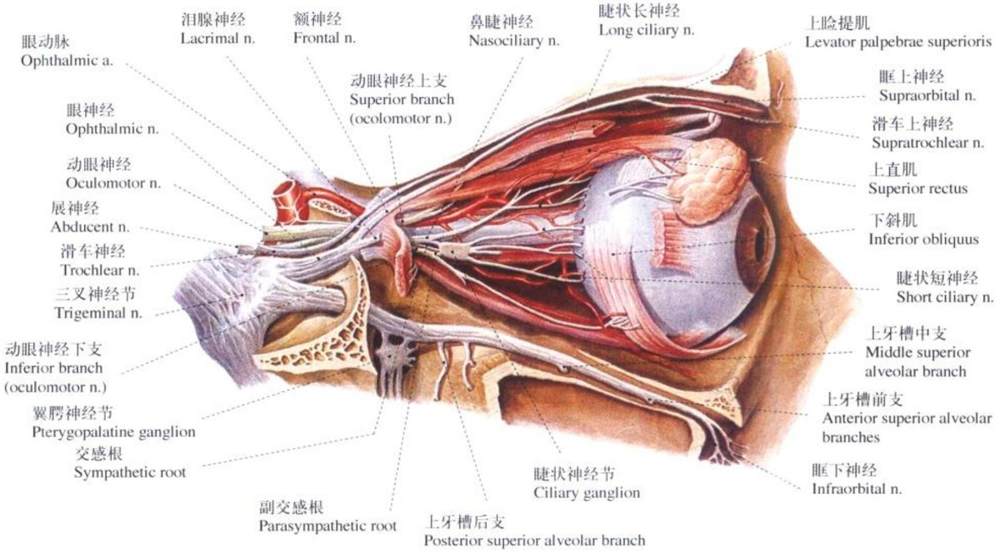
| # | 名称 | 核团位置 | 出颅部位 | 核心功能 | 病变关键体征 |
|---|---|---|---|---|---|
| Ⅰ | 嗅神经 | 端脑（嗅球） | 筛孔 | 嗅觉 | 嗅觉丧失（筛板骨折/额叶底部病变） |
| Ⅱ | 视神经 | 间脑→枕叶 | 视神经管 | 视觉 | 偏盲/象限盲/视力下降 |
| Ⅲ | 动眼神经 | 中脑（上丘） | 眶上裂 | 眼球运动+瞳孔 | 上睑下垂+瞳孔散大+眼外斜 |
| Ⅳ | 滑车神经 | 中脑（下丘） | 眶上裂 | 上斜肌 | 下楼困难（向下向内注视复视） |
| Ⅴ | 三叉神经 | 脑桥 | V1眶上裂 V2圆孔 V3卵圆孔 | 面部感觉+咀嚼 | 角膜反射消失、咬肌萎缩、面部感觉障碍 |
| Ⅵ | 展神经 | 脑桥（面神经丘） | 眶上裂 | 外直肌 | 内斜视（眼球不能外展）→ 颅压增高假性定位体征 |
| 面神经 | 脑桥 | 内耳门→茎乳孔 | 面部表情+味觉 | 周围性面瘫（额纹消失）vs 中枢性面瘫（额纹保留） | |
| Ⅷ | 前庭蜗神经 | 脑桥延髓交界 | 内耳门 | 听觉+平衡 | 眩晕+耳聋+眼震 |
| Ⅸ | 舌咽神经 | 延髓 | 颈静脉孔 | 咽部感觉+吞咽 | 咽反射消失、吞咽困难 |
| Ⅹ | 迷走神经 | 延髓 | 颈静脉孔 | 内脏运动+声带 | 声音嘶哑+吞咽困难+心动过缓 |
| Ⅺ | 副神经 | 延髓+脊髓C1-C5 | 颈静脉孔 | 斜方肌+胸锁乳突肌 | 转颈耸肩无力 |
| Ⅻ | 舌下神经 | 延髓 | 舌下神经管 | 舌肌运动 | 伸舌偏斜（偏向患侧） |
面神经核分为上半核和下半核，两者接受不同的皮质核束支配——这是区分中枢性面瘫和周围性面瘫的解剖基础。
把面神经核的上半核（管理额肌+眼轮匝肌）想象成双电源供电的设备——左右大脑两侧都给它供电，一边断了电另一边还能顶上，所以一侧中风患者仍能抬眉、闭眼（额纹保留）。而下半核（管理口周表情肌）是单电源供电——只接对侧大脑来电，一侧断电立刻罢工，出现口角歪斜。这就是「看额纹定中枢vs周围」的解剖学道理。
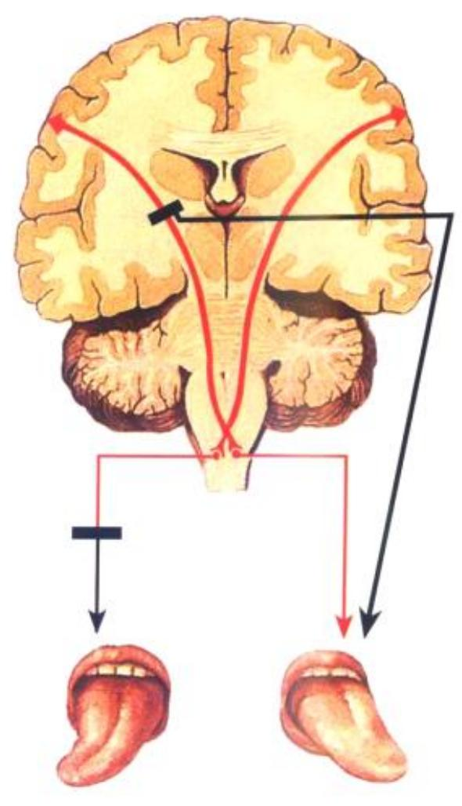
| 中枢性面瘫（核上瘫） | 周围性面瘫（核下瘫） | |
|---|---|---|
| 病变部位 | 对侧皮层或内囊膝部 | 面神经核或面神经本身 |
| 额纹 | ✅ 保留 | ❌ 消失 |
| 闭眼 | ✅ 可闭合 | ❌ 不能闭合 |
| 下面部 | ❌ 瘫痪（鼻唇沟变浅、口角歪斜） | ❌ 瘫痪 |
| 伴随症状 | 常伴对侧偏瘫 | 可伴味觉障碍（鼓索神经）、听觉过敏（镫骨肌神经） |
| 常见病因 | 脑卒中（内囊/皮层） | 贝尔面瘫、中耳炎、脑桥病变 |
面神经从脑桥发出后经过的每一个「站点」都对应特定功能，损伤不同部位出现不同组合的症状：
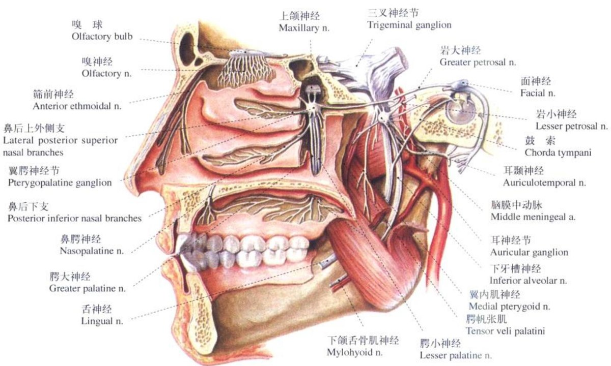
所有感觉传导路都遵循「三级神经元」模式：一级神经元（后根神经节）→ 二级神经元（脊髓或脑干换元，在此交叉）→ 三级神经元（丘脑换元）→ 皮层。交叉位置不同 = 定位诊断的关键。
想象你开车从身体右侧去大脑，有两条高速可选：「痛温觉高速」（脊髓丘脑束）在刚上高速的第一个服务区（脊髓灰质后角）就过立交桥到了对侧，之后一直在对侧开到终点；而「深感觉高速」（后索→内侧丘系）一直走在本侧，直到快进城（延髓）才过立交桥到对侧。
这就解释了Brown-Séquard综合征的「分裂」模式：如果在第一个交叉口之前出了车祸（脊髓半切），深感觉的车因为还没过桥就被堵住了（同侧深感觉障碍），但痛温觉的车在车祸平面以下已经过了桥、在对侧正常行驶中——可它在经过车祸位置时也被堵了（对侧痛温觉障碍）。同一场车祸，堵住的是不同的车。
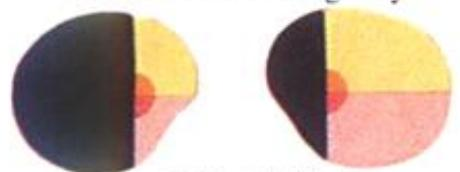
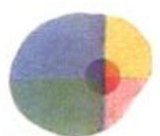
想像你的两个眼睛各有一台摄像机，每台摄像机拍到画面的内侧画面（鼻侧视野）光缆在「视交叉」处交叉到对侧，而外侧画面（颞侧视野）光缆直行。这样，左视束携带的是「两眼看到的右边世界」（左眼鼻侧+右眼颞侧），右视束携带「两眼看到的左边世界」。
用这个模型可以推导常见的视野缺损：①垂体瘤压到视交叉中心→只压坏了交叉的光缆（鼻侧纤维）→两个摄像机都丢失内侧画面→双颞侧偏盲；②左侧视束病变→左侧光缆全断→右侧同向偏盲（两眼都看不到右边）；③右侧颞叶/顶叶的视辐射下段受损（Meyer袢）→只有右下方的光缆受损→对侧同向上象限盲。
| 传导路 | 交叉位置 | 交叉结构 | 记忆要点 |
|---|---|---|---|
| 浅感觉（痛温觉） | 脊髓 | 白质前连合 | 「浅感脊髓交叉」 |
| 深感觉（本体+精细触觉） | 延髓 | 丘系交叉（内侧丘系交叉） | 「深感延髓交叉」 |
| 三叉神经感觉 | 脑桥 | 三叉丘系交叉 | 面部感觉在脑桥交叉 |
| 视觉 | 视交叉 | 鼻侧视网膜纤维交叉 | 「视觉视交叉」 |
| 听觉 | 双侧传导 | 蜗神经核→双侧外侧丘系 | 单侧通路病变不致单侧耳聋 |
| 锥体束（运动） | 延髓 | 锥体交叉（85-90%交叉） | 「运动延髓交叉」 |
| 皮质核束 | 脑干各平面 | 分别交叉至对侧脑神经运动核 | 面下半核+舌下核仅对侧 |
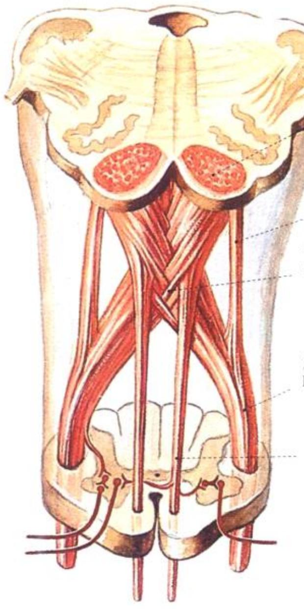
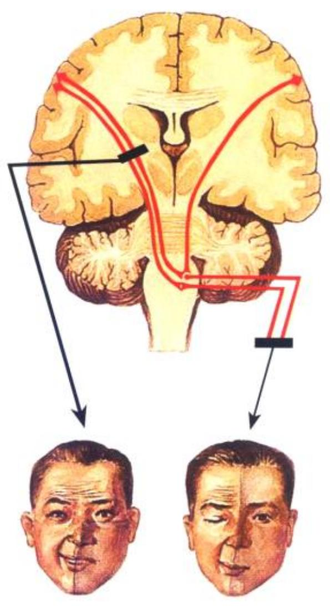
| 特征 | 上运动神经元瘫（中枢性） | 下运动神经元瘫（周围性） |
|---|---|---|
| 肌张力 | ↑ 增高（折刀样） | ↓ 减低 |
| 腱反射 | ↑ 亢进 | ↓ 减弱或消失 |
| 病理征 | + 阳性（Babinski征） | - 阴性 |
| 肌萎缩 | 无（或废用性后期） | 明显，早期出现 |
| 肌束颤动 | 无 | 有 |
| 病变部位 | 大脑皮层/内囊/脊髓侧索 | 前角/神经根/周围神经 |
| 瘫痪分布 | 广泛（整个肢体或偏瘫） | 局限（特定肌肉或肌群） |
上运动神经元：「上高下低」——上运动神经元什么都高（张力高、反射高、病理征阳性）
下运动神经元：「下低有萎有束颤」——张力低、反射低、有萎缩、有束颤
皮质核束的特殊性：除面神经下半核+舌下神经核外，其余脑神经运动核均接受双侧皮质核束支配→ 中枢性病变时只有面下半部和舌肌受累
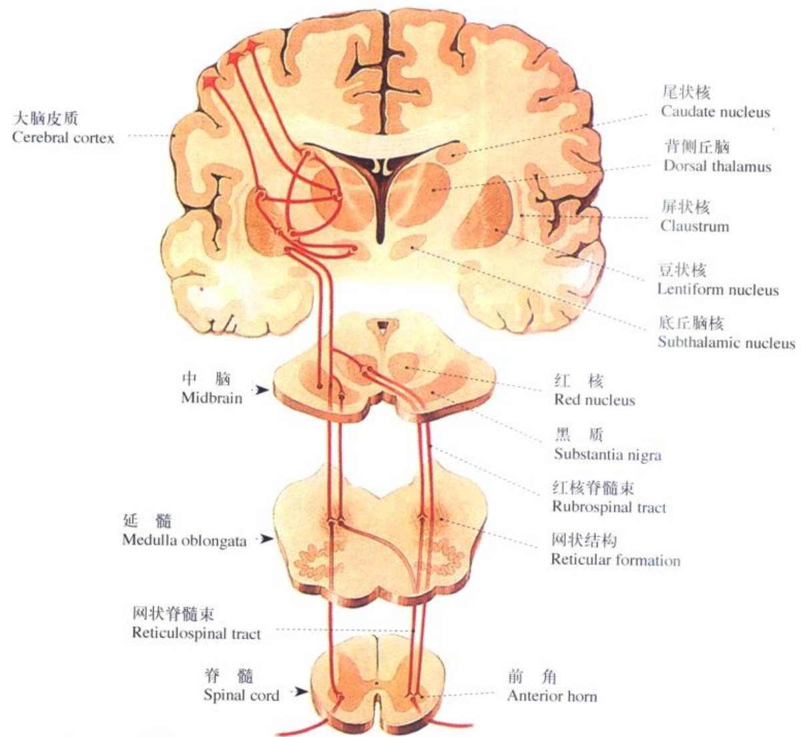
瞳孔对光反射是神经系统检查的「金标准」之一，其通路的任何环节受损都有特定表现：
通路：视网膜→视神经→视交叉（鼻侧交叉）→视束→顶盖前区→双侧EW核（动眼神经副交感核）→动眼神经→睫状神经节→瞳孔括约肌
| 病变部位 | 直接对光反射 | 间接对光反射 | 瞳孔大小 |
|---|---|---|---|
| 视神经（传入障碍） | 患侧消失 | 患侧消失（对侧正常传入） | 正常 |
| 动眼神经（传出障碍） | 患侧消失 | 患侧消失 | 患侧散大 |
| 顶盖前区 | 双侧减弱 | 双侧减弱 | 双侧散大 |
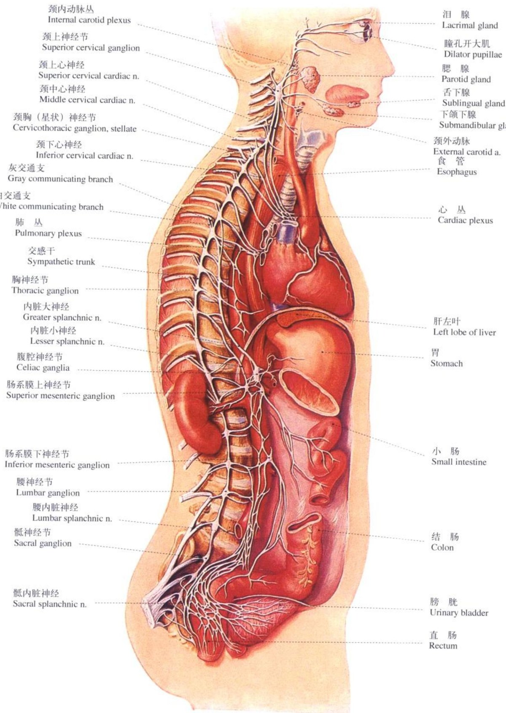
| 特征 | 交感神经 | 副交感神经 |
|---|---|---|
| 低级中枢 | T1-L3 侧角（中间外侧柱） | 脑干（Ⅲ/Ⅶ/Ⅸ/Ⅹ）+ S2-S4 侧角 |
| 神经节位置 | 靠近脊柱（椎旁节/椎前节） | 靠近或位于效应器（终末节） |
| 节前纤维 | 短 | 长 |
| 节后纤维 | 长 | 短 |
| 分布范围 | 广泛（全身血管、汗腺、竖毛肌） | 局限（大部分血管无副交感支配） |
| 效应 | 「战斗或逃跑」：心率↑、血压↑、瞳孔散大、支气管扩张、胃肠抑制 | 「休息与消化」：心率↓、腺体分泌↑、瞳孔缩小、胃肠促进 |
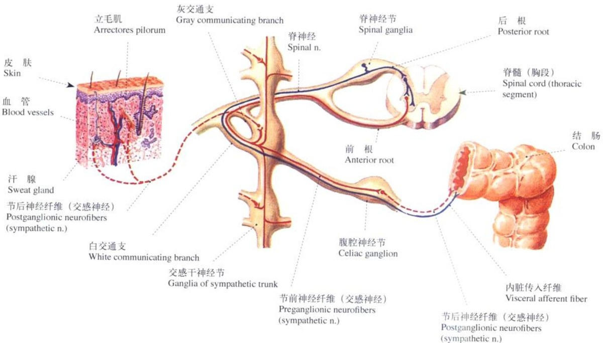
三联征：同侧瞳孔缩小（miosis）+ 上睑下垂（ptosis，Müller肌瘫痪，非提上睑肌）+ 同侧无汗（anhidrosis）
| 级别 | 病变部位 | 常见病因 | 无汗分布 |
|---|---|---|---|
| 一级（中枢性） | 下丘脑→脊髓T1侧角 | 脑干卒中、脊髓空洞症、颈髓肿瘤 | 同侧半身 |
| 二级（节前性） | 脊髓T1侧角→颈上神经节 | Pancoast瘤（肺尖）、颈胸段外伤 | 同侧面部 |
| 三级（节后性） | 颈上神经节→效应器 | 颈内动脉夹层、海绵窦病变 | 无（仅面部血管支配受影响） |
把头面部的交感神经通路想象成一根水管：水源（下丘脑）→调节阀门（脊髓T1侧角）→水泵站（颈上神经节）→各家各户（瞳孔/Müller肌/汗腺/血管）。
如果在水源或阀门前出了问题（一级/中枢性）→整个系统无水→同侧半身无汗（范围最大）；如果阀门到水泵站之间破了（二级/节前性）→水泵站之后还有备用系统但面部得不到水→面部无汗；如果水泵站到各户的支管破了（三级/节后性）→只有那几户停水→无汗不明显（分支已跟随颈内动脉分散至不同区域）。
临床实用记忆：Pancoast瘤（肺尖）顶破T1→二级Horner（面部无汗）；颈内动脉夹层→三级Horner（无汗不明显+瞳孔缩小+上睑下垂）。
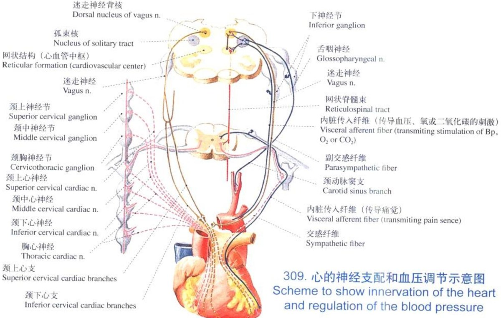
| 类型 | 病变部位 | 膀胱表现 | 病因 |
|---|---|---|---|
| 上运动神经元型（痉挛性） | 骶髓以上（脑/脊髓） | 膀胱过度活动→尿频尿急、反射性排尿 | 脑卒中、脊髓损伤（骶髓以上） |
| 下运动神经元型（弛缓性） | 骶髓S2-S4或马尾 | 膀胱无力→尿潴留、充溢性尿失禁 | 马尾综合征、骶髓损伤、糖尿病神经病变 |
| 标准术语（推荐） | 同义异名 | English |
|---|---|---|
| 锥体束 | 皮质脊髓束 | Pyramidal tract / Corticospinal tract |
| 皮质核束 | 皮质延髓束 / 皮质脑干束 | Corticonuclear tract / Corticobulbar tract |
| 上运动神经元瘫 | 中枢性瘫 / 痉挛性瘫 / 核上瘫 | Upper motor neuron paralysis |
| 下运动神经元瘫 | 周围性瘫 / 弛缓性瘫 / 核下瘫 | Lower motor neuron paralysis |
| 脊髓丘脑束 | 脊髓丘系 | Spinothalamic tract |
| 内侧丘系 | 延髓丘脑束 | Medial lemniscus |
| 薄束核/楔束核 | 后索核 | Nucleus gracilis / Nucleus cuneatus |
| 基底节 | 基底核 | Basal ganglia / Basal nuclei |
| 纹状体 | 新纹状体+旧纹状体 | Corpus striatum |
| 苍白球 | 旧纹状体 | Globus pallidus / Paleostriatum |
| 壳核+尾状核 | 新纹状体 | Putamen + Caudate / Neostriatum |
| 内囊 | 内囊（前肢/膝部/后肢） | Internal capsule |
| 大脑动脉环 | Willis环 / 脑底动脉环 | Circle of Willis |
| 小脑后下动脉 | PICA | Posterior inferior cerebellar artery |
| Wallenberg综合征 | 延髓背外侧综合征 / PICA综合征 | Lateral medullary syndrome |
| Weber综合征 | 大脑脚综合征 / 中脑腹侧综合征 | Weber syndrome |
| Millard-Gubler综合征 | 脑桥腹外侧综合征 | Millard-Gubler syndrome |
| Brown-Sequard综合征 | 脊髓半切综合征 | Brown-Séquard syndrome |
| Horner综合征 | 颈交感神经麻痹综合征 | Horner syndrome |
| Gerstmann综合征 | 角回综合征 | Gerstmann syndrome |
| 前庭蜗神经 | 位听神经 / Ⅷ对脑神经 | Vestibulocochlear nerve |
| 展神经 | 外展神经 / Ⅵ对脑神经 | Abducent nerve |
| 蛛网膜下隙 | 蛛网膜下腔 | Subarachnoid space |
| 中脑水管 | 大脑水管 / Sylvius水管 | Cerebral aqueduct |
| 第四脑室正中孔 | Magendie孔 | Median aperture |
| 第四脑室外侧孔 | Luschka孔 | Lateral aperture |
| 前交通动脉 | ACoA | Anterior communicating artery |
| 后交通动脉 | PCoA | Posterior communicating artery |
| 白质前连合 | 脊髓前白连合 | Anterior white commissure |
| 大脑镰 | 硬脑膜大脑镰 | Falx cerebri |
| 小脑幕 | 硬脑膜小脑幕 | Tentorium cerebelli |
| 翼腭神经节 | 蝶腭神经节 | Pterygopalatine ganglion |
| 解剖知识点 | 教材章节 | 页码 |
|---|---|---|
| 神经系统概述 | 第1章 绪论 | P1-P3 |
| 定位诊断四步法 | 第1章 绪论 | P1-P2 |
| 四组症状 | 第1章 绪论 | P3 |
| 脊髓解剖+Brown-Sequard | 第2章 神经系统解剖与定位 | P19-P22 |
| Willis环 | 第2章 神经系统解剖与定位 | P23 |
| 脊髓横断定位 | 第2章 神经系统解剖与定位 | P29 |
| 脑干断面定位 | 第2章 神经系统解剖与定位 | P38 |
| 大脑皮层功能定位 | 第2章 神经系统解剖与定位 | P5-P6 |
| Gerstmann综合征 | 第2章 神经系统解剖与定位 | P6 |
| 上下运动神经元鉴别 | 第3章 运动系统 | P74 |
| 脑神经检查 | 第4章 脑神经 | 各节 |
| 感觉传导路 | 第5章 感觉系统 | 各节 |
| 共济失调 | 第6章 共济运动 | 各节 |
| 脑血管与卒中 | 第7章 脑血管病 | 各节 |
| 锥体外系疾病 | 第8章 运动障碍疾病 | 各章 |
| 自主神经系统 | 第9章 自主神经系统 | 各节 |